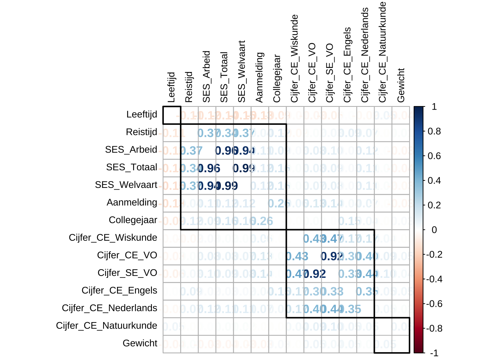
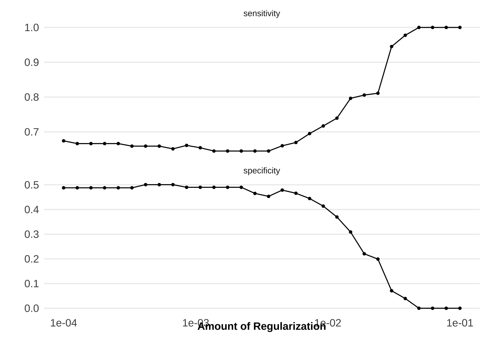
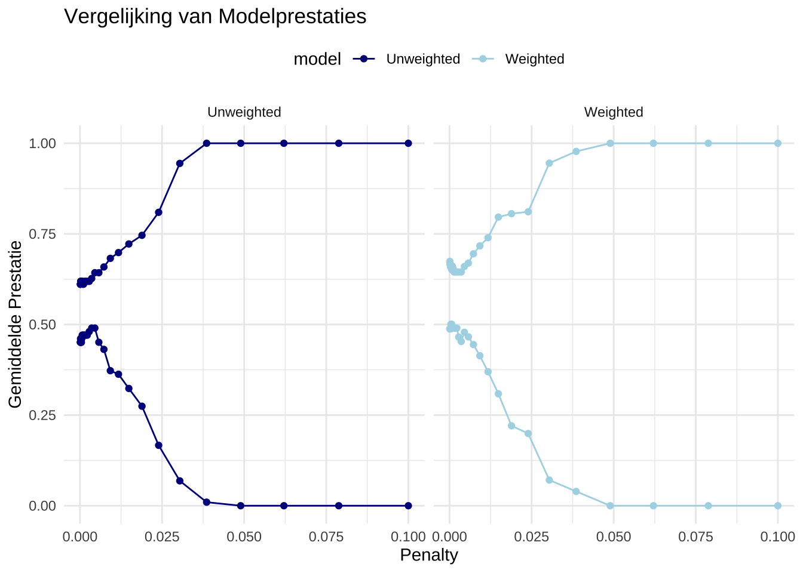
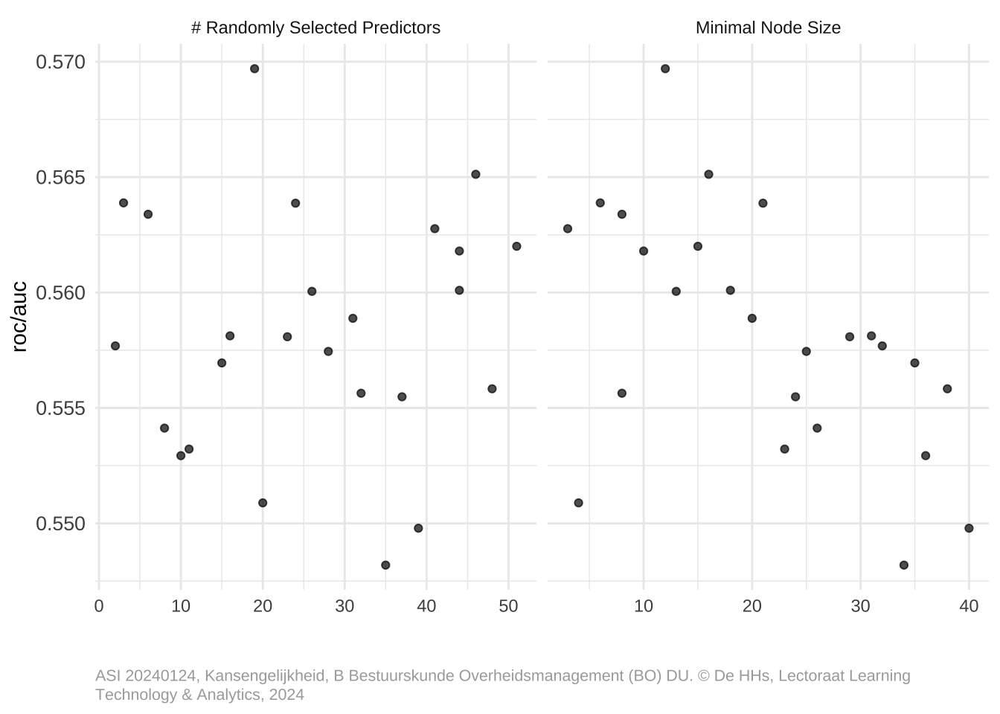
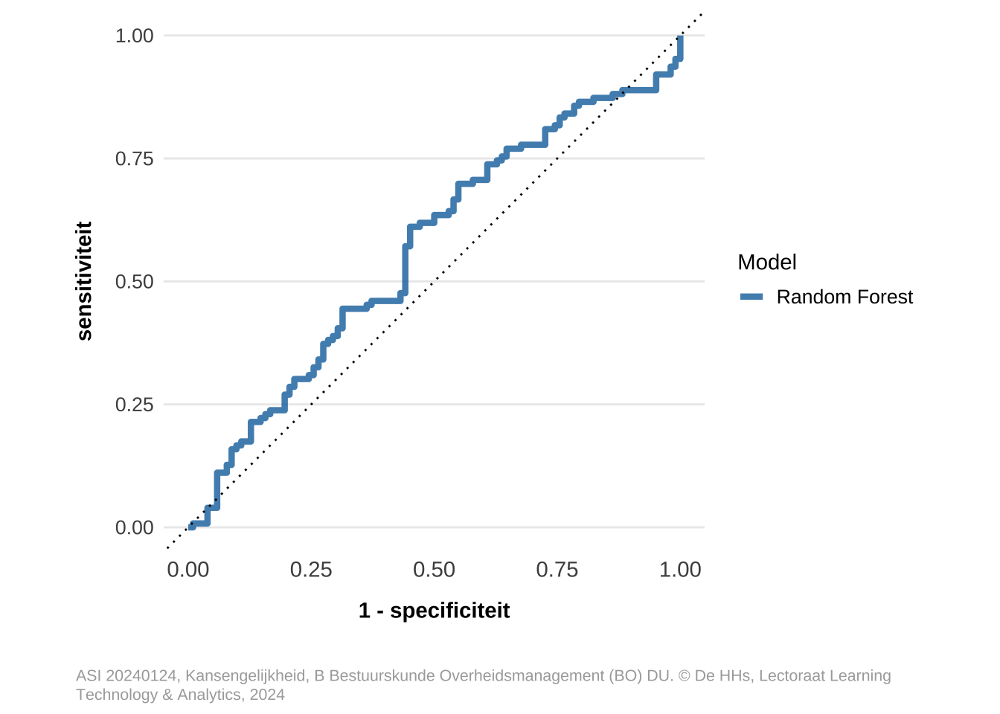
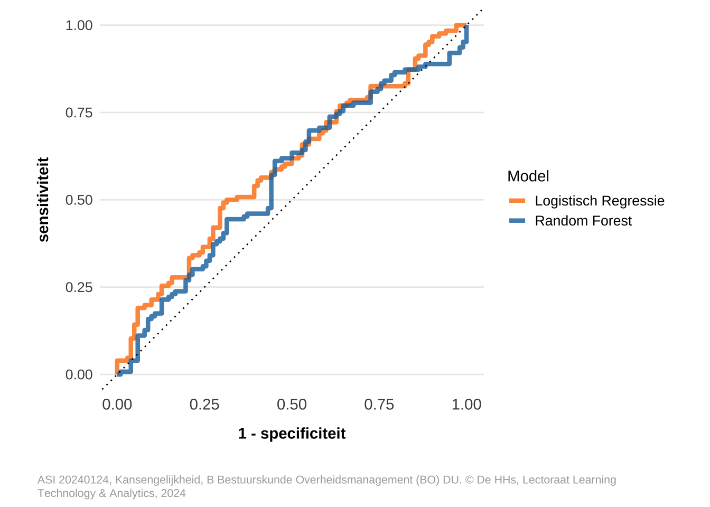
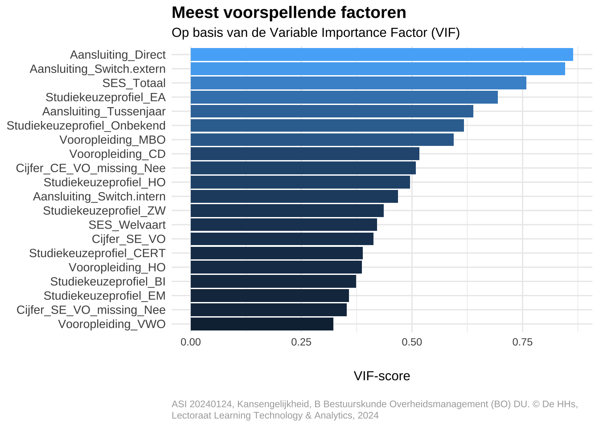
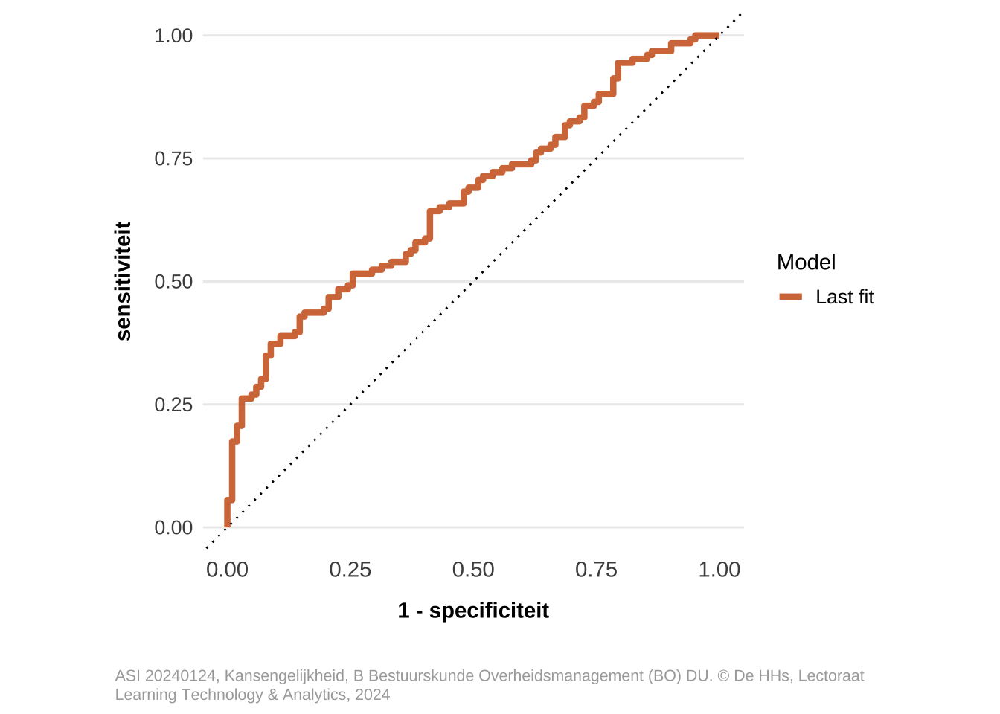

## Laad de data voor de opleiding
dfOpleiding_inschrijvingen_base <- get_lta_studyprogram_enrollments_pin(
board = "HHs/Inschrijvingen",
faculty = faculteit,
studyprogram = opleidingsnaam_huidig,
studytrack = opleiding,
studyform = toupper(opleidingsvorm),
range = "eerstejaars")
## Herschik de levels
Set_Levels(dfOpleiding_inschrijvingen_base)
dfOpleiding_inschrijvingen_base <- dfOpleiding_inschrijvingen_base |>
## Maak een eenvoudige succes variabele aan
Mutate_Retentie(sSucces_model) |>
## Maak van de succes variabele een factor
mutate(SUC_Retentie = as.factor(SUC_Retentie)) |>
## Verbijzonder eventueel op basis van het propedeusediploma
# Filter_Propedeusediploma(sPropedeusediploma) |>
## Maak van de Dubbele studie variabele een Ja/Nee variabele
mutate(INS_Dubbele_studie = ifelse(INS_Aantal_inschrijvingen > 1, "Ja", "Nee")) |>
## Verwijder INS_Aantal_inschrijvingen
select(-INS_Aantal_inschrijvingen) |>
## Pas voor een aantal variabelen de levels aan
Mutate_Levels(
c(
"VOP_Studiekeuzeprofiel_LTA_afkorting",
"INS_Aansluiting_LTA",
"VOP_Toelaatgevende_vooropleiding_soort"
),
list(lLevels_skp, lLevels_vop, lLevels_vop)
)
## B Huidtherapie: Filter op uitsluitend studenten met een rangnummer (selectie)
if(opleiding == "HDT") {
dfOpleiding_inschrijvingen_base <- dfOpleiding_inschrijvingen_base |>
filter(!is.na(RNK_Rangnummer))
} Prognosemodel retentie na 1 jaar (Gewogen)
BRV | B Bestuurskunde Overheidsmanagement (BO) - duaal - versie 1.0
Voorbereidingen
Laad de data
We laden een subset in van historische data specifiek voor:
Opleiding: BRV | B Bestuurskunde Overheidsmanagement (BO), duaal, eerstejaars - Retentie na 1 jaar
Selecteer en inspecteer de data
We selecteren eerst de relevante variabelen. We verwijderen daarbij variabelen die maar 1 waarde hebben. We bekijken de variabelen in een samenvatting in relatie tot retentie. Daarnaast bekijken we de kwaliteit van de data op missende waarden.
lSelect <- c(
"INS_Student_UUID_opleiding_vorm",
"CBS_APCG_tf",
"DEM_Geslacht",
"DEM_Leeftijd_1_oktober",
"GIS_Tijd_fiets_OV",
"INS_Collegejaar",
"INS_Dagen_tussen_aanmelding_en_1_september",
"INS_Dubbele_studie",
"INS_Aansluiting_LTA",
"INS_Navitas_tf",
"SES_Deelscore_arbeid",
"SES_Deelscore_welvaart",
"SES_Totaalscore",
"SUC_Retentie",
"VOP_Gemiddeld_cijfer_cijferlijst",
"VOP_Gemiddeld_eindcijfer_VO_van_de_hoogste_vooropleiding_voor_het_HO",
"VOP_Cijfer_CE1_nederlands",
"VOP_Cijfer_CE1_engels",
"VOP_Cijfer_CE_proxy_wiskunde",
"VOP_Cijfer_CE1_natuurkunde",
"VOP_Studiekeuzeprofiel_LTA_afkorting",
"VOP_Toelaatgevende_vooropleiding_soort"
)
## B Huidtherapie: voeg de variabele RNK_Rangnummer toe
if(opleiding == "HDT") {
lSelect <- c(lSelect, "RNK_Rangnummer")
}
## Maak een subset
dfOpleiding_inschrijvingen <- dfOpleiding_inschrijvingen_base |>
## Selecteer de relevante variabelen
select_at(lSelect) |>
## Hernoem variabelen voor beter leesbare namen
rename(
ID = INS_Student_UUID_opleiding_vorm,
Geslacht = DEM_Geslacht,
Leeftijd = DEM_Leeftijd_1_oktober,
Reistijd = GIS_Tijd_fiets_OV,
Dubbele_studie = INS_Dubbele_studie,
Collegejaar = INS_Collegejaar,
Aanmelding = INS_Dagen_tussen_aanmelding_en_1_september,
Aansluiting = INS_Aansluiting_LTA,
Navitas = INS_Navitas_tf,
APCG = CBS_APCG_tf,
SES_Arbeid = SES_Deelscore_arbeid,
SES_Welvaart = SES_Deelscore_welvaart,
SES_Totaal = SES_Totaalscore,
Retentie = SUC_Retentie,
Cijfer_SE_VO = VOP_Gemiddeld_cijfer_cijferlijst,
Cijfer_CE_VO = VOP_Gemiddeld_eindcijfer_VO_van_de_hoogste_vooropleiding_voor_het_HO,
Cijfer_CE_Nederlands = VOP_Cijfer_CE1_nederlands,
Cijfer_CE_Engels = VOP_Cijfer_CE1_engels,
Cijfer_CE_Wiskunde = VOP_Cijfer_CE_proxy_wiskunde,
Cijfer_CE_Natuurkunde = VOP_Cijfer_CE1_natuurkunde,
Studiekeuzeprofiel = VOP_Studiekeuzeprofiel_LTA_afkorting,
Vooropleiding = VOP_Toelaatgevende_vooropleiding_soort
) |>
## Pas CBS_APCG_tf aan naar factor
mutate(APCG = case_when(APCG == TRUE ~ "Ja",
APCG == FALSE ~ "Nee",
.default = "Onbekend")) |>
## Geef aan waar missende cijfers in het VO zijn
Mutate_Cijfers_VO() |>
## Verwijder variabelen, waarbij er maar 1 waarde is
select(where(~ n_distinct(.) > 1)) |>
## Sorteer op Collegejaar en ID
arrange(Collegejaar, ID)
## B Huidtherapie: hernoem de variabele RNK_Rangnummer
if(opleiding == "HDT") {
dfOpleiding_inschrijvingen <- dfOpleiding_inschrijvingen |>
rename(Rangnummer = RNK_Rangnummer)
}
dfOpleiding_inschrijvingen <- dfOpleiding_inschrijvingen |>
ltabase::sort_distinct()
## Verwijder de basis dataset
rm(dfOpleiding_inschrijvingen_base)We maken een summary en voegen gewichten toe (willekeurig gegenereerd). We maken een survey design en tonen de samenvattende tabel.
Maak nu een survey design
Toon de samenvattende tabel.
| Variabele | Retentie | p-value2 | Totaal, N = 16.9351 | |
|---|---|---|---|---|
| Ja, N=9.380 (55%)1 | Nee, N=7.555 (45%)1 | |||
| Aanmelding | 143,6 (64,1) | 137,0 (67,2) | 0,064 | 140,7 (65,5) |
| Aansluiting | 0,013* | |||
| 2e Studie | 0 (0%) | 76 (100%) | 76 (100%) | |
| Direct | 5.061 (53%) | 4.437 (47%) | 9.498 (100%) | |
| Na CD | 311 (78%) | 90 (22%) | 401 (100%) | |
| Switch extern | 2.806 (56%) | 2.166 (44%) | 4.972 (100%) | |
| Switch intern | 431 (56%) | 339 (44%) | 770 (100%) | |
| Tussenjaar | 771 (63%) | 447 (37%) | 1.218 (100%) | |
| APCG | 0,086 | |||
| Ja | 2.858 (52%) | 2.657 (48%) | 5.515 (100%) | |
| Nee | 6.346 (58%) | 4.667 (42%) | 11.013 (100%) | |
| Onbekend | 176 (43%) | 231 (57%) | 407 (100%) | |
| Cijfer_CE_Engels | 7,1 (1,3) | 7,5 (1,0) | 0,004** | 7,3 (1,2) |
| Cijfer_CE_Engels_missing | <0,001*** | |||
| Ja | 4.562 (50%) | 4.574 (50%) | 9.136 (100%) | |
| Nee | 4.818 (62%) | 2.981 (38%) | 7.799 (100%) | |
| Cijfer_CE_Natuurkunde | 6,3 (0,9) | 6,0 (1,2) | 0,6 | 6,3 (1,0) |
| Cijfer_CE_Natuurkunde_missing | 0,014* | |||
| Ja | 9.023 (55%) | 7.446 (45%) | 16.469 (100%) | |
| Nee | 357 (77%) | 109 (23%) | 466 (100%) | |
| Cijfer_CE_Nederlands | 6,3 (0,9) | 6,4 (0,9) | 0,6 | 6,4 (0,9) |
| Cijfer_CE_Nederlands_missing | <0,001*** | |||
| Ja | 4.562 (50%) | 4.589 (50%) | 9.151 (100%) | |
| Nee | 4.818 (62%) | 2.966 (38%) | 7.784 (100%) | |
| Cijfer_CE_VO | 6,6 (0,5) | 6,6 (0,5) | 0,10 | 6,6 (0,5) |
| Cijfer_CE_VO_missing | 0,006** | |||
| Ja | 3.629 (51%) | 3.543 (49%) | 7.172 (100%) | |
| Nee | 5.751 (59%) | 4.012 (41%) | 9.763 (100%) | |
| Cijfer_CE_Wiskunde | 6,4 (1,2) | 6,3 (1,2) | 0,2 | 6,3 (1,2) |
| Cijfer_CE_Wiskunde_missing | 0,001** | |||
| Ja | 5.093 (51%) | 4.830 (49%) | 9.923 (100%) | |
| Nee | 4.287 (61%) | 2.725 (39%) | 7.012 (100%) | |
| Cijfer_SE_VO | 6,6 (0,5) | 6,6 (0,5) | 0,079 | 6,6 (0,5) |
| Cijfer_SE_VO_missing | <0,001*** | |||
| Ja | 4.086 (50%) | 4.123 (50%) | 8.209 (100%) | |
| Nee | 5.294 (61%) | 3.432 (39%) | 8.726 (100%) | |
| Dubbele_studie | <0,001*** | |||
| Ja | 13 (6,8%) | 177 (93%) | 190 (100%) | |
| Nee | 9.367 (56%) | 7.378 (44%) | 16.745 (100%) | |
| Geslacht | 0,029* | |||
| M | 4.953 (52%) | 4.487 (48%) | 9.440 (100%) | |
| V | 4.427 (59%) | 3.068 (41%) | 7.495 (100%) | |
| Leeftijd | 19,7 (2,5) | 19,9 (2,6) | 0,2 | 19,8 (2,6) |
| Reistijd | 44,6 (24,6) | 43,5 (25,5) | 0,2 | 44,1 (25,0) |
| SES_Arbeid | 0,0 (0,1) | 0,0 (0,1) | 0,11 | 0,0 (0,1) |
| SES_Totaal | 0,0 (0,3) | -0,1 (0,3) | 0,11 | 0,0 (0,3) |
| SES_Welvaart | 0,0 (0,1) | 0,0 (0,2) | 0,081 | 0,0 (0,1) |
| Studiekeuzeprofiel | 0,004** | |||
| AHO | 13 (45%) | 16 (55%) | 29 (100%) | |
| BI | 0 (0%) | 16 (100%) | 16 (100%) | |
| CERT | 47 (100%) | 0 (0%) | 47 (100%) | |
| CM | 848 (62%) | 525 (38%) | 1.373 (100%) | |
| EA | 1.181 (46%) | 1.362 (54%) | 2.543 (100%) | |
| EM | 1.985 (50%) | 1.989 (50%) | 3.974 (100%) | |
| EM&CM | 3.001 (63%) | 1.774 (37%) | 4.775 (100%) | |
| HB | 51 (44%) | 66 (56%) | 117 (100%) | |
| HO | 164 (34%) | 320 (66%) | 484 (100%) | |
| ICT | 27 (29%) | 66 (71%) | 93 (100%) | |
| MedV | 44 (50%) | 44 (50%) | 88 (100%) | |
| MobV | 14 (47%) | 16 (53%) | 30 (100%) | |
| NG | 282 (50%) | 279 (50%) | 561 (100%) | |
| NT | 153 (70%) | 66 (30%) | 219 (100%) | |
| NT&NG | 65 (46%) | 76 (54%) | 141 (100%) | |
| OS | 0 (0%) | 20 (100%) | 20 (100%) | |
| TP | 0 (0%) | 45 (100%) | 45 (100%) | |
| TR | 104 (72%) | 41 (28%) | 145 (100%) | |
| TSL | 107 (70%) | 45 (30%) | 152 (100%) | |
| VNL | 71 (100%) | 0 (0%) | 71 (100%) | |
| ZW | 491 (55%) | 407 (45%) | 898 (100%) | |
| Vooropleiding | <0,001*** | |||
| BD | 28 (19%) | 119 (81%) | 147 (100%) | |
| CD | 457 (80%) | 114 (20%) | 571 (100%) | |
| HAVO | 5.978 (56%) | 4.611 (44%) | 10.589 (100%) | |
| HO | 247 (62%) | 149 (38%) | 396 (100%) | |
| MBO | 2.267 (48%) | 2.444 (52%) | 4.711 (100%) | |
| VWO | 403 (77%) | 118 (23%) | 521 (100%) | |
| 1 Mean (SD); n (%) | ||||
| 2 *p<0.05; **p<0.01; ***p<0.001 | ||||
Bewaar de samenvattende tabel als afbeelding.
Voer ter illustratie een vergelijking tussen 2 factoren uit (met Geslacht).
| Variabele | M, N = 9440 | V, N = 7495 | ||||||
|---|---|---|---|---|---|---|---|---|
| Ja, N=4.953 (52%)1 | Nee, N=4.487 (48%)1 | p-value2 | Totaal, N = 9.4401 | Ja, N=4.427 (59%)1 | Nee, N=3.068 (41%)1 | p-value2 | Totaal, N = 7.4951 | |
| Aanmelding | 137,6 (63,9) | 133,6 (65,0) | 0,4 | 135,7 (64,4) | 150,4 (63,7) | 142,0 (70,2) | 0,13 | 147,0 (66,5) |
| Aansluiting | 0,13 | 0,034* | ||||||
| 2e Studie | 0 (0%) | 13 (100%) | 13 (100%) | 0 (0%) | 63 (100%) | 63 (100%) | ||
| Direct | 2.345 (48%) | 2.550 (52%) | 4.895 (100%) | 2.716 (59%) | 1.887 (41%) | 4.603 (100%) | ||
| Na CD | 191 (68%) | 90 (32%) | 281 (100%) | 120 (100%) | 0 (0%) | 120 (100%) | ||
| Switch extern | 1.750 (56%) | 1.351 (44%) | 3.101 (100%) | 1.056 (56%) | 815 (44%) | 1.871 (100%) | ||
| Switch intern | 271 (52%) | 246 (48%) | 517 (100%) | 160 (63%) | 93 (37%) | 253 (100%) | ||
| Tussenjaar | 396 (63%) | 237 (37%) | 633 (100%) | 375 (64%) | 210 (36%) | 585 (100%) | ||
| APCG | 0,4 | 0,078 | ||||||
| Ja | 1.337 (50%) | 1.348 (50%) | 2.685 (100%) | 1.521 (54%) | 1.309 (46%) | 2.830 (100%) | ||
| Nee | 3.530 (54%) | 3.014 (46%) | 6.544 (100%) | 2.816 (63%) | 1.653 (37%) | 4.469 (100%) | ||
| Onbekend | 86 (41%) | 125 (59%) | 211 (100%) | 90 (46%) | 106 (54%) | 196 (100%) | ||
| Cijfer_CE_Engels | 7,2 (1,4) | 7,6 (1,0) | 0,082 | 7,4 (1,2) | 6,9 (1,2) | 7,3 (1,1) | 0,074 | 7,0 (1,1) |
| Cijfer_CE_Engels_missing | <0,001*** | 0,019* | ||||||
| Ja | 2.115 (45%) | 2.551 (55%) | 4.666 (100%) | 2.447 (55%) | 2.023 (45%) | 4.470 (100%) | ||
| Nee | 2.838 (59%) | 1.936 (41%) | 4.774 (100%) | 1.980 (65%) | 1.045 (35%) | 3.025 (100%) | ||
| Cijfer_CE_Natuurkunde | 6,4 (0,9) | 6,1 (1,4) | >0,9 | 6,3 (1,0) | 0,3 | |||
| 4.4 | 11 (100%) | 0 (0%) | 11 (100%) | |||||
| 5.3 | 0 (0%) | 11 (100%) | 11 (100%) | |||||
| 5.8 | 0 (0%) | 18 (100%) | 18 (100%) | |||||
| 5.9 | 20 (100%) | 0 (0%) | 20 (100%) | |||||
| 6 | 13 (100%) | 0 (0%) | 13 (100%) | |||||
| 6.2 | 18 (100%) | 0 (0%) | 18 (100%) | |||||
| 6.8 | 10 (100%) | 0 (0%) | 10 (100%) | |||||
| 7.3 | 16 (100%) | 0 (0%) | 16 (100%) | |||||
| Cijfer_CE_Natuurkunde_missing | 0,013* | 0,4 | ||||||
| Ja | 4.684 (52%) | 4.407 (48%) | 9.091 (100%) | 4.339 (59%) | 3.039 (41%) | 7.378 (100%) | ||
| Nee | 269 (77%) | 80 (23%) | 349 (100%) | 88 (75%) | 29 (25%) | 117 (100%) | ||
| Cijfer_CE_Nederlands | 6,3 (0,9) | 6,4 (0,9) | 0,5 | 6,3 (0,9) | 6,4 (0,9) | 6,4 (0,9) | 0,9 | 6,4 (0,9) |
| Cijfer_CE_Nederlands_missing | <0,001*** | 0,014* | ||||||
| Ja | 2.115 (45%) | 2.551 (55%) | 4.666 (100%) | 2.447 (55%) | 2.038 (45%) | 4.485 (100%) | ||
| Nee | 2.838 (59%) | 1.936 (41%) | 4.774 (100%) | 1.980 (66%) | 1.030 (34%) | 3.010 (100%) | ||
| Cijfer_CE_VO | 6,6 (0,5) | 6,6 (0,5) | 0,2 | 6,6 (0,5) | 6,7 (0,5) | 6,6 (0,5) | 0,5 | 6,7 (0,5) |
| Cijfer_CE_VO_missing | 0,063 | 0,014* | ||||||
| Ja | 1.654 (48%) | 1.826 (52%) | 3.480 (100%) | 1.975 (53%) | 1.717 (47%) | 3.692 (100%) | ||
| Nee | 3.299 (55%) | 2.661 (45%) | 5.960 (100%) | 2.452 (64%) | 1.351 (36%) | 3.803 (100%) | ||
| Cijfer_CE_Wiskunde | 6,5 (1,1) | 6,3 (1,2) | 0,13 | 6,4 (1,2) | 6,2 (1,2) | 6,2 (1,1) | 0,8 | 6,2 (1,1) |
| Cijfer_CE_Wiskunde_missing | <0,001*** | 0,3 | ||||||
| Ja | 2.276 (45%) | 2.735 (55%) | 5.011 (100%) | 2.817 (57%) | 2.095 (43%) | 4.912 (100%) | ||
| Nee | 2.677 (60%) | 1.752 (40%) | 4.429 (100%) | 1.610 (62%) | 973 (38%) | 2.583 (100%) | ||
| Cijfer_SE_VO | 6,6 (0,5) | 6,5 (0,5) | 0,083 | 6,6 (0,5) | 6,7 (0,5) | 6,6 (0,5) | 0,6 | 6,7 (0,5) |
| Cijfer_SE_VO_missing | 0,001** | 0,035* | ||||||
| Ja | 1.904 (45%) | 2.313 (55%) | 4.217 (100%) | 2.182 (55%) | 1.810 (45%) | 3.992 (100%) | ||
| Nee | 3.049 (58%) | 2.174 (42%) | 5.223 (100%) | 2.245 (64%) | 1.258 (36%) | 3.503 (100%) | ||
| Dubbele_studie | 0,13 | <0,001*** | ||||||
| Ja | 13 (19%) | 54 (81%) | 67 (100%) | 0 (0%) | 123 (100%) | 123 (100%) | ||
| Nee | 4.940 (53%) | 4.433 (47%) | 9.373 (100%) | 4.427 (60%) | 2.945 (40%) | 7.372 (100%) | ||
| Leeftijd | 19,9 (2,7) | 20,0 (2,8) | 0,8 | 19,9 (2,7) | 19,5 (2,3) | 19,8 (2,4) | 0,2 | 19,6 (2,3) |
| Reistijd | 45,2 (24,5) | 44,6 (26,4) | 0,4 | 44,9 (25,4) | 44,0 (24,7) | 41,8 (24,2) | 0,3 | 43,1 (24,5) |
| SES_Arbeid | 0,0 (0,1) | 0,0 (0,1) | 0,5 | 0,0 (0,1) | 0,0 (0,1) | 0,0 (0,1) | 0,075 | 0,0 (0,1) |
| SES_Totaal | 0,0 (0,3) | 0,0 (0,3) | 0,3 | 0,0 (0,3) | -0,1 (0,3) | -0,1 (0,3) | 0,2 | -0,1 (0,3) |
| SES_Welvaart | 0,0 (0,1) | 0,0 (0,1) | 0,2 | 0,0 (0,1) | 0,0 (0,2) | -0,1 (0,2) | 0,14 | 0,0 (0,2) |
| Studiekeuzeprofiel | 0,2 | 0,004** | ||||||
| AHO | 13 (45%) | 16 (55%) | 29 (100%) | |||||
| BI | 0 (0%) | 16 (100%) | 16 (100%) | |||||
| CERT | 20 (100%) | 0 (0%) | 20 (100%) | 27 (100%) | 0 (0%) | 27 (100%) | ||
| CM | 200 (38%) | 325 (62%) | 525 (100%) | 648 (76%) | 200 (24%) | 848 (100%) | ||
| EA | 514 (44%) | 642 (56%) | 1.156 (100%) | 667 (48%) | 720 (52%) | 1.387 (100%) | ||
| EM | 1.201 (48%) | 1.278 (52%) | 2.479 (100%) | 784 (52%) | 711 (48%) | 1.495 (100%) | ||
| EM&CM | 1.784 (60%) | 1.213 (40%) | 2.997 (100%) | 1.217 (68%) | 561 (32%) | 1.778 (100%) | ||
| HB | 25 (63%) | 15 (38%) | 40 (100%) | 26 (34%) | 51 (66%) | 77 (100%) | ||
| HO | 103 (36%) | 186 (64%) | 289 (100%) | 61 (31%) | 134 (69%) | 195 (100%) | ||
| ICT | 27 (29%) | 66 (71%) | 93 (100%) | |||||
| MedV | 16 (55%) | 13 (45%) | 29 (100%) | 28 (47%) | 31 (53%) | 59 (100%) | ||
| MobV | 14 (47%) | 16 (53%) | 30 (100%) | |||||
| NG | 158 (56%) | 122 (44%) | 280 (100%) | 124 (44%) | 157 (56%) | 281 (100%) | ||
| NT | 126 (66%) | 66 (34%) | 192 (100%) | 27 (100%) | 0 (0%) | 27 (100%) | ||
| NT&NG | 65 (53%) | 58 (47%) | 123 (100%) | 0 (0%) | 18 (100%) | 18 (100%) | ||
| OS | 0 (0%) | 20 (100%) | 20 (100%) | |||||
| TP | 0 (0%) | 45 (100%) | 45 (100%) | |||||
| TR | 14 (48%) | 15 (52%) | 29 (100%) | 90 (78%) | 26 (22%) | 116 (100%) | ||
| TSL | 79 (86%) | 13 (14%) | 92 (100%) | 28 (47%) | 32 (53%) | 60 (100%) | ||
| VNL | 38 (100%) | 0 (0%) | 38 (100%) | 33 (100%) | 0 (0%) | 33 (100%) | ||
| ZW | 161 (53%) | 143 (47%) | 304 (100%) | 330 (56%) | 264 (44%) | 594 (100%) | ||
| Vooropleiding | 0,006** | 0,001** | ||||||
| BD | 0 (0%) | 30 (100%) | 30 (100%) | 28 (24%) | 89 (76%) | 117 (100%) | ||
| CD | 281 (71%) | 114 (29%) | 395 (100%) | 176 (100%) | 0 (0%) | 176 (100%) | ||
| HAVO | 3.267 (52%) | 3.020 (48%) | 6.287 (100%) | 2.711 (63%) | 1.591 (37%) | 4.302 (100%) | ||
| HO | 114 (60%) | 75 (40%) | 189 (100%) | 133 (64%) | 74 (36%) | 207 (100%) | ||
| MBO | 1.004 (46%) | 1.186 (54%) | 2.190 (100%) | 1.263 (50%) | 1.258 (50%) | 2.521 (100%) | ||
| VWO | 287 (82%) | 62 (18%) | 349 (100%) | 116 (67%) | 56 (33%) | 172 (100%) | ||
| 1 Mean (SD); n (%) | ||||||||
| 2 *p<0.05; **p<0.01; ***p<0.001 | ||||||||
Bewaar de samenvattende tabel als afbeelding.
Missende waarden
Analyseer missende waarden
Analyseer de data en maak een samenvatting van de datakwaliteit.
## Laad dlookr
suppressMessages(library(dlookr))
## Toon een samenvatting van de data, gesorteerd op missende waarden
diagnose(dfOpleiding_inschrijvingen) |>
mutate(missing_percent = round(missing_percent, 2),
unique_rate = round(missing_percent, 2)) |>
arrange(desc(missing_percent)) |>
knitr::kable(caption = "Kwaliteit van de data voor bewerkingen (gesorteerd op missende waarden)",
col.names = c("Variabelen",
"Type",
"# Missende waarden",
"% Missende waarden",
"# Unieke waarden",
"Ratio unieke waarden"))| Variabelen | Type | # Missende waarden | % Missende waarden | # Unieke waarden | Ratio unieke waarden |
|---|---|---|---|---|---|
| Cijfer_CE_Natuurkunde | numeric | 1105 | 97.27 | 23 | 97.27 |
| Cijfer_CE_Wiskunde | numeric | 667 | 58.71 | 55 | 58.71 |
| Cijfer_CE_Nederlands | numeric | 617 | 54.31 | 48 | 54.31 |
| Cijfer_CE_Engels | numeric | 616 | 54.23 | 59 | 54.23 |
| Cijfer_SE_VO | numeric | 553 | 48.68 | 31 | 48.68 |
| Cijfer_CE_VO | numeric | 483 | 42.52 | 32 | 42.52 |
| Studiekeuzeprofiel | character | 76 | 6.69 | 22 | 6.69 |
| Reistijd | numeric | 44 | 3.87 | 475 | 3.87 |
| SES_Arbeid | numeric | 29 | 2.55 | 298 | 2.55 |
| SES_Totaal | numeric | 29 | 2.55 | 551 | 2.55 |
| SES_Welvaart | numeric | 29 | 2.55 | 391 | 2.55 |
| Aanmelding | numeric | 0 | 0.00 | 282 | 0.00 |
| Aansluiting | character | 0 | 0.00 | 6 | 0.00 |
| APCG | character | 0 | 0.00 | 3 | 0.00 |
| Cijfer_CE_Engels_missing | character | 0 | 0.00 | 2 | 0.00 |
| Cijfer_CE_Natuurkunde_missing | character | 0 | 0.00 | 2 | 0.00 |
| Cijfer_CE_Nederlands_missing | character | 0 | 0.00 | 2 | 0.00 |
| Cijfer_CE_VO_missing | character | 0 | 0.00 | 2 | 0.00 |
| Cijfer_CE_Wiskunde_missing | character | 0 | 0.00 | 2 | 0.00 |
| Cijfer_SE_VO_missing | character | 0 | 0.00 | 2 | 0.00 |
| Collegejaar | numeric | 0 | 0.00 | 11 | 0.00 |
| Dubbele_studie | character | 0 | 0.00 | 2 | 0.00 |
| Geslacht | factor | 0 | 0.00 | 2 | 0.00 |
| ID | character | 0 | 0.00 | 1135 | 0.00 |
| Leeftijd | integer | 0 | 0.00 | 19 | 0.00 |
| Retentie | factor | 0 | 0.00 | 2 | 0.00 |
| Vooropleiding | character | 0 | 0.00 | 6 | 0.00 |
| Gewicht | hardhat_frequency_weights | 0 | 0.00 | 11 | 0.00 |
## Verwijder dlookr
detach("package:dlookr", unload = TRUE)Vul missende waarden op
## Bewerk de data
dfOpleiding_inschrijvingen <- dfOpleiding_inschrijvingen |>
## Imputeer alle numerieke variabelen met de mean
mutate(across(where(is.numeric), ~ ifelse(
is.na(.x),
mean(.x, na.rm = T),
.x
)) ) |>
## Zet character variabelen om naar factor
mutate(across(where(is.character), as.factor)) |>
## Zet logische variabelen om naar 0 of 1
mutate(across(where(is.logical), as.integer)) |>
## Vul in factoren missende waarden op met "Onbekend"
mutate(across(where(is.factor), ~ suppressWarnings(
fct_explicit_na(.x, na_level = "Onbekend")
))) |>
## Herschik de kolommen, zodat Retentie vooraan staat
select(Retentie, everything())
## Bekijk de data
## glimpse(dfOpleiding_inschrijvingen)
## Laad dlookr
suppressMessages(library(dlookr))
## Maak een diagnose van de data
diagnose(dfOpleiding_inschrijvingen) |>
mutate(missing_percent = round(missing_percent, 2),
unique_rate = round(unique_rate, 2)) |>
knitr::kable(caption = "Kwaliteit van de data na bewerkingen",
col.names = c("Variabelen",
"Type",
"# Missende waarden",
"% Missende waarden",
"# Unieke waarden",
"Ratio unieke waarden"))| Variabelen | Type | # Missende waarden | % Missende waarden | # Unieke waarden | Ratio unieke waarden |
|---|---|---|---|---|---|
| Retentie | factor | 0 | 0 | 2 | 0.00 |
| Aanmelding | numeric | 0 | 0 | 282 | 0.25 |
| Aansluiting | factor | 0 | 0 | 6 | 0.01 |
| APCG | factor | 0 | 0 | 3 | 0.00 |
| Cijfer_CE_Engels | numeric | 0 | 0 | 59 | 0.05 |
| Cijfer_CE_Engels_missing | factor | 0 | 0 | 2 | 0.00 |
| Cijfer_CE_Natuurkunde | numeric | 0 | 0 | 22 | 0.02 |
| Cijfer_CE_Natuurkunde_missing | factor | 0 | 0 | 2 | 0.00 |
| Cijfer_CE_Nederlands | numeric | 0 | 0 | 48 | 0.04 |
| Cijfer_CE_Nederlands_missing | factor | 0 | 0 | 2 | 0.00 |
| Cijfer_CE_VO | numeric | 0 | 0 | 32 | 0.03 |
| Cijfer_CE_VO_missing | factor | 0 | 0 | 2 | 0.00 |
| Cijfer_CE_Wiskunde | numeric | 0 | 0 | 55 | 0.05 |
| Cijfer_CE_Wiskunde_missing | factor | 0 | 0 | 2 | 0.00 |
| Cijfer_SE_VO | numeric | 0 | 0 | 31 | 0.03 |
| Cijfer_SE_VO_missing | factor | 0 | 0 | 2 | 0.00 |
| Collegejaar | numeric | 0 | 0 | 11 | 0.01 |
| Dubbele_studie | factor | 0 | 0 | 2 | 0.00 |
| Geslacht | factor | 0 | 0 | 2 | 0.00 |
| ID | factor | 0 | 0 | 1135 | 1.00 |
| Leeftijd | integer | 0 | 0 | 19 | 0.02 |
| Reistijd | numeric | 0 | 0 | 475 | 0.42 |
| SES_Arbeid | numeric | 0 | 0 | 298 | 0.26 |
| SES_Totaal | numeric | 0 | 0 | 551 | 0.49 |
| SES_Welvaart | numeric | 0 | 0 | 391 | 0.34 |
| Studiekeuzeprofiel | factor | 0 | 0 | 22 | 0.02 |
| Vooropleiding | factor | 0 | 0 | 6 | 0.01 |
| Gewicht | integer | 0 | 0 | 11 | 0.01 |
detach("package:dlookr", unload = TRUE)Correlaties
Het is verstandig om voorafgaand aan het bouwen van een model te kijken naar de onderlinge correlaties tussen numerieke variabelen. Dit geeft inzicht in de data en kan helpen bij het maken van keuzes voor het model of de duiding van de uitkomsten.
dfOpleiding_inschrijvingen_clean <- dfOpleiding_inschrijvingen |>
select(where(is.numeric)) |>
na.omit() # Verwijder rijen met NA-waarden (0 rijen)
# Bereken de correlatiematrix
cor_matrix <- cor(dfOpleiding_inschrijvingen_clean)
# Controleer op NA/NaN/Inf waarden in de correlatiematrix
if(any(is.na(cor_matrix))) {
stop("De correlatiematrix bevat NA/NaN/Inf waarden.")
}
## Maak een plot van de onderlinge correlaties in numerieke variabelen
corrplot::corrplot(
cor_matrix,
order = 'hclust',
addrect = 4,
method = "number",
tl.cex = 0.8,
tl.col = "black",
diag = FALSE
)
De gewogen variant.
## Laad de wCorr library voor gewogen correlaties
library(wCorr)wCorr v1.9.8# Maak een matrix van de numerieke variabelen zonder gewicht
dfOpleiding_inschrijvingen_variables <- dfOpleiding_inschrijvingen |>
select(where(is.numeric)) |>
select(-Gewicht)
dfOpleiding_inschrijvingen_weights <- dfOpleiding_inschrijvingen$Gewicht
# Initialiseer een lege matrix voor de correlaties
var_names <- colnames(dfOpleiding_inschrijvingen_variables)
cor_matrix <- matrix(ncol = length(var_names),
nrow = length(var_names))
colnames(cor_matrix) <- var_names
rownames(cor_matrix) <- var_names
# Bereken de gewogen correlaties en vul de matrix
for (i in 1:length(var_names)) {
for (j in 1:length(var_names)) {
if (i == j) {
cor_matrix[i, j] <- 1
} else {
cor_matrix[i, j] <- weightedCorr(dfOpleiding_inschrijvingen_variables[[i]],
dfOpleiding_inschrijvingen_variables[[j]],
method = "pearson",
weights = dfOpleiding_inschrijvingen_weights)
}
}
}
# Toon de matrix
cor_matrix |>
corrplot::corrplot(
order = 'hclust',
addrect = 4,
method = "number",
tl.cex = 0.8,
tl.col = "black",
diag = FALSE)
Bouw de datasets
Split de data: trainingset, validatieset en testset
set.seed(0821)
## Voeg het gewicht toe aan de data
dfOpleiding_inschrijvingen <- dfOpleiding_inschrijvingen |>
mutate(Gewicht = hardhat::frequency_weights(Gewicht))
## Splits de data in 3 delen: 60%, 20% en 20%
splits <- initial_validation_split(dfOpleiding_inschrijvingen,
strata = Retentie,
prop = c(0.6, 0.2))
## Maak drie sets: een trainingset, een testset en een validatieset
dfRetentie_train <- training(splits)
dfRetentie_test <- testing(splits)
dfRetentie_validation <- validation_set(splits)
## Maak een resample set op basis van 10 folds (default)
dfRetentie_resamples <- vfold_cv(dfRetentie_train, strata = Retentie)Bekijk de proporties van de training- en testset
| Naam | Retentie | Aantal | Proportie |
|---|---|---|---|
| Trainingset | Ja | 376 | 55.3% |
| Trainingset | Nee | 304 | 44.7% |
| Testset | Ja | 126 | 55.3% |
| Testset | Nee | 102 | 44.7% |
Model I: Logistische regressie (gewogen)
Bouw het model: logistische regressie
## Bouw het model: logistische regressie
lr_mod <-
logistic_reg(penalty = tune(), mixture = 1) |>
set_engine("glmnet")Maak de recipe
## Bouw de recipe: logistische regressie
lr_recipe <-
recipe(Retentie ~ ., data = dfRetentie_train) |>
update_role(ID, new_role = "ID") |> ## Zet de student ID als ID variabele
step_rm(Collegejaar) |> ## Verwijder collegejaar uit het model
step_dummy(all_nominal_predictors()) |> ## Maak dummy variabelen van categorische variabelen
step_zv(all_predictors()) |> ## Verwijder zero values
step_normalize(all_numeric_predictors()) ## Centreer en schaal numerieke variabelen
## Toon de recipe
tidy(lr_recipe) |>
knitr::kable(col.names = c("Nummer",
"Operatie",
"Type",
"Getraind",
"Sla over",
"ID"))| Nummer | Operatie | Type | Getraind | Sla over | ID |
|---|---|---|---|---|---|
| 1 | step | rm | FALSE | FALSE | rm_NUuII |
| 2 | step | dummy | FALSE | FALSE | dummy_DaHiK |
| 3 | step | zv | FALSE | FALSE | zv_qw0x0 |
| 4 | step | normalize | FALSE | FALSE | normalize_77qdl |
De variabelen die nu nog resteren zijn:
| Aanmelding | Aansluiting_Switch.intern | Studiekeuzeprofiel_HB |
| Cijfer_CE_Engels | Aansluiting_Tussenjaar | Studiekeuzeprofiel_HO |
| Cijfer_CE_Natuurkunde | APCG_Nee | Studiekeuzeprofiel_ICT |
| Cijfer_CE_Nederlands | APCG_Onbekend | Studiekeuzeprofiel_MedV |
| Cijfer_CE_VO | Cijfer_CE_Engels_missing_Nee | Studiekeuzeprofiel_NG |
| Cijfer_CE_Wiskunde | Cijfer_CE_Natuurkunde_missing_Nee | Studiekeuzeprofiel_NT |
| Cijfer_SE_VO | Cijfer_CE_Nederlands_missing_Nee | Studiekeuzeprofiel_NT.NG |
| ID | Cijfer_CE_VO_missing_Nee | Studiekeuzeprofiel_TP |
| Leeftijd | Cijfer_CE_Wiskunde_missing_Nee | Studiekeuzeprofiel_TR |
| Reistijd | Cijfer_SE_VO_missing_Nee | Studiekeuzeprofiel_TSL |
| SES_Arbeid | Dubbele_studie_Nee | Studiekeuzeprofiel_VNL |
| SES_Totaal | Geslacht_V | Studiekeuzeprofiel_ZW |
| SES_Welvaart | Studiekeuzeprofiel_BI | Studiekeuzeprofiel_Onbekend |
| Gewicht | Studiekeuzeprofiel_CERT | Vooropleiding_CD |
| Retentie | Studiekeuzeprofiel_CM | Vooropleiding_HAVO |
| Aansluiting_Direct | Studiekeuzeprofiel_EA | Vooropleiding_HO |
| Aansluiting_Na.CD | Studiekeuzeprofiel_EM | Vooropleiding_MBO |
| Aansluiting_Switch.extern | Studiekeuzeprofiel_EM.CM | Vooropleiding_VWO |
Maak de workflow
Voor de uitvoering bouwen we een nieuwe workflow. Daaraan voegen we het model en de bewerkingen in de recipe toe.
## Maak de workflow: logistische regressie
lr_workflow <-
workflow() |> ## Maak een workflow
add_model(lr_mod) |> ## Voeg het model toe
add_recipe(lr_recipe) |> ## Voeg de recipe toe
add_case_weights(Gewicht) ## Voeg de gewichten toe
## Toon de workflow
lr_workflow══ Workflow ════════════════════════════════════════════════════════════════════
Preprocessor: Recipe
Model: logistic_reg()
── Preprocessor ────────────────────────────────────────────────────────────────
4 Recipe Steps
• step_rm()
• step_dummy()
• step_zv()
• step_normalize()
── Case Weights ────────────────────────────────────────────────────────────────
Gewicht
── Model ───────────────────────────────────────────────────────────────────────
Logistic Regression Model Specification (classification)
Main Arguments:
penalty = tune()
mixture = 1
Computational engine: glmnet Tune en train het model
Het model moet getuned worden. Dit houdt in dat we de beste parameters voor het model moeten vinden. We maken een grid met verschillende penalty waarden. Daarmee kunnen we vervolgens het beste model selecteren met de hoogste ROC/AUC. We plotten de resultaten van de tuning, zodat we hieruit het beste model kunnen kiezen.
cls_metrics <- metric_set(sensitivity, specificity)
## Maak een grid: logistische regressie
lr_reg_grid <- tibble(penalty = 10 ^ seq(-4, -1, length.out = 30))
set.seed(0821)
lr_res <-
lr_workflow |>
tune_grid(resamples = dfRetentie_validation,
grid = lr_reg_grid,
metrics = cls_metrics)
autoplot(lr_res)
lr_unwt_workflow <-
lr_workflow %>%
remove_case_weights()
set.seed(0821)
lr_unwt_res <-
lr_unwt_workflow |>
tune_grid(resamples = dfRetentie_validation,
grid = lr_reg_grid,
metrics = cls_metrics)
## Maak een facet plot van deze twee modellen
# Extraheer de resultaten uit lr_workflow_res en voeg een kolom toe om aan te geven welk model het is
lr_unwt_res_metrics <- collect_metrics(lr_unwt_res) |>
mutate(model = "Unweighted")
lr_wt_res_metrics <- collect_metrics(lr_res) |>
mutate(model = "Weighted")
# Combineer beide resultaten
combined_metrics <- bind_rows(lr_unwt_res_metrics,
lr_wt_res_metrics)
# Facet plot maken
ggplot(combined_metrics, aes(x = penalty, y = mean, color = model, group = .metric)) +
geom_line() +
geom_point() +
facet_wrap(~ model, scales = "free_x") +
labs(title = "Vergelijking van Modelprestaties",
x = "Penalty",
y = "Gemiddelde Prestatie") +
scale_color_manual(values = c("Unweighted" = "darkblue", "Weighted" = "lightblue")) +
theme_minimal() +
theme(legend.position = "top")
## Maak een grid: logistische regressie
lr_reg_grid <- tibble(penalty = 10 ^ seq(-4, -1, length.out = 30))
## Train en tune het model: logistische regressie
lr_res <-
lr_workflow |>
tune_grid(dfRetentie_validation,
grid = lr_reg_grid,
control = control_grid(save_pred = TRUE),
metrics = metric_set(roc_auc))## Plot de resultaten + een rode verticale lijn voor de max AUC
lr_plot <-
lr_res |>
collect_metrics() |>
ggplot(aes(x = penalty, y = mean)) +
geom_point() +
geom_line() +
## Maak de schaal van de x-as logaritmisch
scale_x_log10(labels = scales::label_number()) +
theme(
axis.title.x = element_text(margin = margin(t = 20))
) +
# Bepaal de titel, ondertitel en caption
labs(
caption = sCaption,
x = "Area under the ROC Curve",
y = "Penalty"
)
## Voeg LTA elementen toe
lr_plot <- Add_LTA_Theme_Elements(lr_plot, title_subtitle = FALSE)
# Zoek de penalty waarde met de max AUC
max_auc_penalty <- lr_res |>
collect_metrics() |>
filter(mean == max(mean)) |>
pull(penalty)
# Voeg de rode verticale lijn toe aan lr_plot
lr_plot_plus <- lr_plot +
geom_vline(xintercept = max_auc_penalty, color = "red")
# Vind een mean voor de max AUC die hoger is
max_auc_mean <- lr_res |>
collect_metrics() |>
filter(mean == max(mean)) |>
pull(penalty)
## Print de definitieve plot
lr_plot_plus
Kies het beste model
We evalueren modellen met een zo hoog mogelijke Area under the ROC Curve (AUC/ROC) en een zo laag mogelijke penalty. Zo kunnen we uit de resultaten het beste model kiezen. Tot slot maken we een ROC curve om de prestaties van het model te visualiseren.
## Toon het beste model
top_models <-
lr_res |>
show_best(metric = "roc_auc", n = 10) |>
mutate(mean = round(mean, 6)) |>
arrange(penalty)
top_models|>
knitr::kable(col.names = c("Penalty",
"Metriek",
"Estimator",
"Gemiddelde",
"Aantal",
"SE",
"Configuratie"))| Penalty | Metriek | Estimator | Gemiddelde | Aantal | SE | Configuratie |
|---|---|---|---|---|---|---|
| 0.0013738 | roc_auc | binary | 0.601125 | 1 | NA | Preprocessor1_Model12 |
| 0.0017433 | roc_auc | binary | 0.602785 | 1 | NA | Preprocessor1_Model13 |
| 0.0022122 | roc_auc | binary | 0.602697 | 1 | NA | Preprocessor1_Model14 |
| 0.0028072 | roc_auc | binary | 0.602839 | 1 | NA | Preprocessor1_Model15 |
| 0.0035622 | roc_auc | binary | 0.605651 | 1 | NA | Preprocessor1_Model16 |
| 0.0045204 | roc_auc | binary | 0.605715 | 1 | NA | Preprocessor1_Model17 |
| 0.0057362 | roc_auc | binary | 0.604228 | 1 | NA | Preprocessor1_Model18 |
| 0.0072790 | roc_auc | binary | 0.601077 | 1 | NA | Preprocessor1_Model19 |
| 0.0092367 | roc_auc | binary | 0.599965 | 1 | NA | Preprocessor1_Model20 |
| 0.0117210 | roc_auc | binary | 0.600191 | 1 | NA | Preprocessor1_Model21 |
## Selecteer het beste model: logistische regressie
lr_best <-
lr_res |>
collect_metrics() |>
filter(mean == max(mean)) |>
slice(1)
lr_best|>
mutate(mean = round(mean, 6)) |>
knitr::kable(col.names = c("Penalty",
"Metriek",
"Estimator",
"Gemiddelde",
"Aantal",
"SE",
"Configuratie"))| Penalty | Metriek | Estimator | Gemiddelde | Aantal | SE | Configuratie |
|---|---|---|---|---|---|---|
| 0.0045204 | roc_auc | binary | 0.605715 | 1 | NA | Preprocessor1_Model17 |
## Verzamel de predicties en evalueer het model (AUC/ROC): logistische regressie
lr_auc <-
lr_res |>
collect_predictions(parameters = lr_best) |>
roc_curve(Retentie, .pred_Ja) |>
mutate(model = "Logistisch Regressie")
## Plot de ROC curve
Get_ROC_Plot(lr_auc, position = 1)
## Bepaal de AUC van het beste model
lr_auc_highest <-
lr_res |>
collect_predictions(parameters = lr_best) |>
roc_auc(Retentie, .pred_Ja)
## Voeg de naam van het model en de AUC toe dfModel_results
dfModel_results <-
dfModel_results |>
add_row(model = "Logistic Regression", auc = lr_auc_highest$.estimate)Model II: Random Forest (gewogen)
Bepaal het aantal PC-cores
## Bepaal het aantal cores
cores <- parallel::detectCores()Maak het model
## Bouw het model: random forest
rf_mod <-
rand_forest(mtry = tune(), min_n = tune(), trees = 1000) |>
set_engine("ranger", num.threads = cores) |>
set_mode("classification")Maak de recipe
## Maak de recipe: random forest
rf_recipe <-
recipe(Retentie ~ ., data = dfRetentie_train) |>
step_rm(Collegejaar) ## Verwijder Collegejaar uit het model
## Toon de recipe
tidy(rf_recipe) |>
knitr::kable(col.names = c("Nummer",
"Operatie",
"Type",
"Getraind",
"Sla over",
"ID"))| Nummer | Operatie | Type | Getraind | Sla over | ID |
|---|---|---|---|---|---|
| 1 | step | rm | FALSE | FALSE | rm_D3gjp |
Maak de workflow
We voegen het model en de recipe toe aan de workflow voor dit model.
## Maak de workflow: random forest
rf_workflow <-
workflow() |> ## Maak een workflow
add_model(rf_mod) |> ## Voeg het model toe
add_recipe(lr_recipe) |> ## Voeg de recipe toe
add_case_weights(Gewicht) ## Voeg de gewichten toe
## Toon de workflow
rf_workflow══ Workflow ════════════════════════════════════════════════════════════════════
Preprocessor: Recipe
Model: rand_forest()
── Preprocessor ────────────────────────────────────────────────────────────────
4 Recipe Steps
• step_rm()
• step_dummy()
• step_zv()
• step_normalize()
── Case Weights ────────────────────────────────────────────────────────────────
Gewicht
── Model ───────────────────────────────────────────────────────────────────────
Random Forest Model Specification (classification)
Main Arguments:
mtry = tune()
trees = 1000
min_n = tune()
Engine-Specific Arguments:
num.threads = cores
Computational engine: ranger Tune en train het model
## Toon de parameters die getuned kunnen worden
rf_modRandom Forest Model Specification (classification)
Main Arguments:
mtry = tune()
trees = 1000
min_n = tune()
Engine-Specific Arguments:
num.threads = cores
Computational engine: ranger ## Extraheer de parameters die getuned worden
extract_parameter_set_dials(rf_mod)Collection of 2 parameters for tuning
identifier type object
mtry mtry nparam[?]
min_n min_n nparam[+]
Model parameters needing finalization:
# Randomly Selected Predictors ('mtry')
See `?dials::finalize` or `?dials::update.parameters` for more information.## Bepaal de seed
set.seed(2904)
## Bouw het grid: random forest
rf_res <-
rf_workflow |>
tune_grid(dfRetentie_validation,
grid = 25,
control = control_grid(save_pred = TRUE),
metrics = metric_set(roc_auc))i Creating pre-processing data to finalize unknown parameter: mtryKies het beste model
We evalueren de beste modellen en maken een ROC curve om de performance van het model te visualiseren. Vervolgens vergelijken we de prestaties van de modellen en kiezen we het beste model.
## Toon de beste modellen
rf_res |>
show_best(metric = "roc_auc", n = 15) |>
mutate(mean = round(mean, 6)) |>
knitr::kable(col.names = c("Mtry",
"Min. aantal",
"Metriek",
"Estimator",
"Gemiddelde",
"Aantal",
"SE",
"Configuratie"))| Mtry | Min. aantal | Metriek | Estimator | Gemiddelde | Aantal | SE | Configuratie |
|---|---|---|---|---|---|---|---|
| 19 | 12 | roc_auc | binary | 0.569696 | 1 | NA | Preprocessor1_Model05 |
| 46 | 16 | roc_auc | binary | 0.565122 | 1 | NA | Preprocessor1_Model04 |
| 3 | 6 | roc_auc | binary | 0.563884 | 1 | NA | Preprocessor1_Model22 |
| 24 | 21 | roc_auc | binary | 0.563871 | 1 | NA | Preprocessor1_Model15 |
| 6 | 8 | roc_auc | binary | 0.563391 | 1 | NA | Preprocessor1_Model08 |
| 41 | 3 | roc_auc | binary | 0.562767 | 1 | NA | Preprocessor1_Model21 |
| 51 | 15 | roc_auc | binary | 0.562003 | 1 | NA | Preprocessor1_Model12 |
| 44 | 10 | roc_auc | binary | 0.561799 | 1 | NA | Preprocessor1_Model18 |
| 44 | 18 | roc_auc | binary | 0.560096 | 1 | NA | Preprocessor1_Model11 |
| 26 | 13 | roc_auc | binary | 0.560052 | 1 | NA | Preprocessor1_Model19 |
| 31 | 20 | roc_auc | binary | 0.558884 | 1 | NA | Preprocessor1_Model20 |
| 16 | 31 | roc_auc | binary | 0.558124 | 1 | NA | Preprocessor1_Model24 |
| 23 | 29 | roc_auc | binary | 0.558085 | 1 | NA | Preprocessor1_Model02 |
| 2 | 32 | roc_auc | binary | 0.557689 | 1 | NA | Preprocessor1_Model03 |
| 28 | 25 | roc_auc | binary | 0.557450 | 1 | NA | Preprocessor1_Model25 |
## Plot de resultaten
autoplot <- autoplot(rf_res) +
theme_minimal() +
labs(
y = "roc/auc",
caption = sCaption
)
## Voeg LTA elementen toe
autoplot <- Add_LTA_Theme_Elements(autoplot, title_subtitle = FALSE)
print(autoplot)
## Selecteer het beste model
rf_best <-
rf_res |>
select_best(metric = "roc_auc")
rf_best|>
knitr::kable(col.names = c("Mtry",
"Min. aantal",
"Configuratie"))| Mtry | Min. aantal | Configuratie |
|---|---|---|
| 19 | 12 | Preprocessor1_Model05 |
Code
## Verzamel de predicties
rf_res |>
collect_predictions() |>
head(10) |>
mutate(.pred_Nee = scales::percent(.pred_Nee, accuracy = 0.1),
.pred_Ja = scales::percent(.pred_Ja, accuracy = 0.1)) |>
knitr::kable(col.names = c("% Voorsp. Nee",
"% Voorsp. Ja",
"ID",
"Rij",
"Mtry",
"Min. aantal",
"Retentie",
"Gewichten",
"Configuratie"))| % Voorsp. Nee | % Voorsp. Ja | ID | Rij | Mtry | Min. aantal | Retentie | Gewichten | Configuratie |
|---|---|---|---|---|---|---|---|---|
| 57.6% | 42.4% | validation | 681 | 48 | 38 | Nee | 19 | Preprocessor1_Model01 |
| 60.2% | 39.8% | validation | 682 | 48 | 38 | Ja | 11 | Preprocessor1_Model01 |
| 59.6% | 40.4% | validation | 683 | 48 | 38 | Ja | 10 | Preprocessor1_Model01 |
| 65.3% | 34.7% | validation | 684 | 48 | 38 | Nee | 18 | Preprocessor1_Model01 |
| 53.9% | 46.1% | validation | 685 | 48 | 38 | Ja | 19 | Preprocessor1_Model01 |
| 57.3% | 42.7% | validation | 686 | 48 | 38 | Ja | 11 | Preprocessor1_Model01 |
| 64.3% | 35.7% | validation | 687 | 48 | 38 | Nee | 10 | Preprocessor1_Model01 |
| 50.0% | 50.0% | validation | 688 | 48 | 38 | Ja | 13 | Preprocessor1_Model01 |
| 48.5% | 51.5% | validation | 689 | 48 | 38 | Ja | 20 | Preprocessor1_Model01 |
| 26.8% | 73.2% | validation | 690 | 48 | 38 | Ja | 18 | Preprocessor1_Model01 |
Code
## Bepaal de AUC/ROC curve
rf_auc <-
rf_res |>
collect_predictions(parameters = rf_best) |>
roc_curve(Retentie, .pred_Ja) |>
mutate(model = "Random Forest")
## Plot de ROC curve
Get_ROC_Plot(rf_auc, position = 2)
Code
## Bepaal de AUC van het beste model
rf_auc_highest <-
rf_res |>
collect_predictions(parameters = rf_best) |>
roc_auc(Retentie, .pred_Ja)
## Voeg de naam van het model en de AUC toe dfModel_results
dfModel_results <-
dfModel_results |>
add_row(model = "Random Forest", auc = rf_auc_highest$.estimate)De uiteindelijke fit
Combineer de AUC/ROC curves en kies het beste model
Eerst combineren we de AUC/ROC curves van de modellen om ze te vergelijken. We kiezen het beste model op basis van de hoogste AUC/ROC.
## Combineer de AUC/ROC curves om de modellen te vergelijken
Get_ROC_Plot(list(lr_auc, rf_auc))
## Bepaal welke van de modellen het beste is op basis van de hoogste AUC/ROC
dfModel_results <- dfModel_results |>
mutate(number = row_number()) |>
mutate(best = ifelse(auc == max(auc), TRUE, FALSE)) |>
arrange(number)
## Bepaal het beste model
sBest_model <- dfModel_results$model[dfModel_results$best == TRUE]
sBest_model_auc <- round(dfModel_results$auc[dfModel_results$best == TRUE], 4)Het beste model is het Logistic Regression model met een AUC/ROC van 0.5935. We ronden de analyse verder af met het Logistic Regression model.
Maak het finale model
We maken het finale model op basis van de beste parameters die we hebben gevonden. Door in de engine bij importance de impurity op te geven, wordt het beste random forest model gekozen om de data definitief mee te classificeren.
## Test het ontwikkelde model op de testset
## Bepaal de optimale parameters
## Bouw de laatste modellen
last_lr_mod <-
logistic_reg(penalty = lr_best$penalty,
mixture = 1) |>
set_engine("glmnet") |>
set_mode("classification")
last_rf_mod <-
rand_forest(mtry = rf_best$mtry,
min_n = rf_best$min_n,
trees = 1000) |>
set_engine("ranger", num.threads = cores, importance = "impurity") |>
set_mode("classification")Maak de workflow
We voegen het model toe aan de workflow en updaten de workflow met het finale model.
## Update de workflows
last_lr_workflow <-
lr_workflow |>
update_model(last_lr_mod)
last_rf_workflow <-
rf_workflow |>
update_model(last_rf_mod)Fit het finale model
We voeren de finale fit uit. De functie last_fit past het model toe op de validatieset.
## Voer de laatste fit uit
set.seed(2904)
## Maak voor beide modellen een laatste fit, zodat we deze kunnen opslaan voor later gebruik
last_fit_lr <-
last_lr_workflow |>
last_fit(splits)
last_fit_rf <-
last_rf_workflow |>
last_fit(splits)
lLast_fits <- list(last_fit_lr, last_fit_rf) |>
set_names(c("Logistic Regression", "Random Forest"))
## Bepaal welk model het beste is
if(sBest_model == "Logistic Regression") {
last_fit <- last_fit_lr
} else if(sBest_model == "Random Forest") {
last_fit <- last_fit_rf
}
## Bewaar de resultaten, de modelresultaten en de bijbehorende data
sFittedmodels_outputpath <- Get_Model_Outputpath(mode = "last-fits")
saveRDS(lLast_fits, file = sFittedmodels_outputpath)
sModelresults_outputpath <- Get_Model_Outputpath(mode = "modelresults")
saveRDS(dfModel_results, file = sModelresults_outputpath)
sData_outputpath <- Get_Model_Outputpath(mode = "data")
saveRDS(dfOpleiding_inschrijvingen, file = sData_outputpath)Evalueer het finale model: metrieken en vif
We evalueren het finale model op basis van 4 metrieken: 1) accuraatheid, 2) ROC/AUC en 3) de Brier score (de Mean Squared Error) en 4) de Variable Importance Factor (VIF). Uit de VIF is op te maken welke variabelen het meest bijdragen aan de voorspelling van de uitkomstvariabele.
## Verzamel de metrieken
last_fit |>
collect_metrics() |>
mutate(.estimate = round(.estimate, 4)) |>
knitr::kable(col.names = c("Metriek",
"Estimator",
"Estimate",
"Configuratie"))| Metriek | Estimator | Estimate | Configuratie |
|---|---|---|---|
| accuracy | binary | 0.6065 | Preprocessor1_Model1 |
| roc_auc | binary | 0.6637 | Preprocessor1_Model1 |
| brier_class | binary | 0.2278 | Preprocessor1_Model1 |
Code
# Extraheer de feature importance
dfVif <- last_fit |>
extract_fit_parsnip() |>
vip::vi() |>
arrange(desc(Importance)) |>
head(20)
# Maak de plot met fill op de variabele 'Importance'
importance_plot <- dfVif |>
ggplot(aes(x = reorder(Variable, Importance),
y = Importance,
fill = Importance)) +
geom_col(show.legend = FALSE) +
## Maak de titel en caption
labs(title = "Meest voorspellende factoren",
subtitle = "Op basis van de Variable Importance Factor (VIF)",
x = NULL,
y = "VIF-score",
caption = sCaption) +
theme_minimal() +
Set_LTA_Theme() +
theme(
axis.title.x = element_text(margin = margin(t = 20))
) +
coord_flip()
## Voeg LTA elementen toe
importance_plot <- Add_LTA_Theme_Elements(importance_plot, title_subtitle = TRUE)
# Toon de plot
print(importance_plot)
Plot de ROC curve
Tot slot maken we een ROC curve om de prestaties van het definitieve model te visualiseren. De Sensitivity (True Positive Rate) en Specificity (True Negative Rate) worden hierin uitgezet. De Area under the ROC Curve (AUC/ROC) geeft de prestaties van het model weer. Het model scoort beter naarmate de AUC/ROC dichter bij de 1 ligt, de linker bovenhoek. De linker bovenhoek houdt in dat alle prognoses exact overeenstemmen met de werkelijkheid. Een AUC/ROC van 0,5 betekent dat het model niet beter presteert dan een willekeurige voorspelling.
## Toon de roc curve
auc_lf <- last_fit |>
collect_predictions() |>
roc_curve(Retentie, .pred_Ja) |>
mutate(model = "Last fit")
Get_ROC_Plot(auc_lf, position = 3)
Verantwoording
Deze analyse maakt deel uit van het onderzoek naar kansengelijkheid van het lectoraat Learning Technology & Analytics van De Haagse Hogeschool: No Fairness without Awareness | Het rapport is door het lectoraat ontwikkeld in Quarto 1.4.549. | Template versie: 0.9.1.9000
Copyright
Dr. Theo Bakker, Lectoraat Learning Technology & Analytics, De Haagse Hogeschool © 2023-2024. Alle rechten voorbehouden.